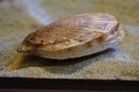

ほたてがい（帆立貝）の漁獲量 都道府県ランキング
2位までと、とれた量
ほたてがいが日本でいちばん多くとれるのは北海道です。31万6,637 tで、全国（31万6,717 t）の100%を占めます。

| 順位 | 都道府県 | 漁獲量 | 全国に占める割合 |
|---|---|---|---|
| 1位 | 北海道 | 31万6,637 t | 100% |
| 2位 | 青森県 | 79 t | 0.0% |
ほたてがいの漁獲量の推移（令和2年〜令和6年）
全国の漁獲量は、令和2年の34万6,013 tから令和6年の31万6,717 tへ、8%減りました。この間、1位はずっと北海道です。
| 年 | 全国 | 1位 | 2位 | 3位 |
|---|---|---|---|---|
| 令和6年 | 31万6,717 t | 北海道31万6,637 t | 青森県79 t | |
| 令和5年 | 33万592 t | 北海道33万176 t | 青森県416 t | |
| 令和4年 | 34万40 t | 北海道33万9,609 t | 青森県431 t | |
| 令和3年 | 35万5,950 t | 北海道35万5,554 t | 青森県396 t | |
| 令和2年 | 34万6,013 t | 北海道34万5,442 t | 青森県571 t |
この数字について
- 分類：貝の仲間
- 全国の漁獲量：31万6,717 t
- この数字が表すもの：漁獲量（海でとった重さ。養殖は含みません）
- 調査：海面漁業生産統計調査（海面漁業） 令和6年
- 2県分を調査（調査していない県は順位に入りません）
ほたてがいの漁獲量について、よくある質問
- ほたてがいの漁獲量が日本一の都道府県はどこですか？
- 北海道です。海面漁業生産統計調査（海面漁業）（令和6年）で31万6,637 tでした。
- ほたてがいの漁獲量ランキング2位・3位はどこですか？
- 2位は青森県（79 t）です。
- ほたてがいの全国の漁獲量はどれくらいですか？
- 31万6,717 t（令和6年）です。